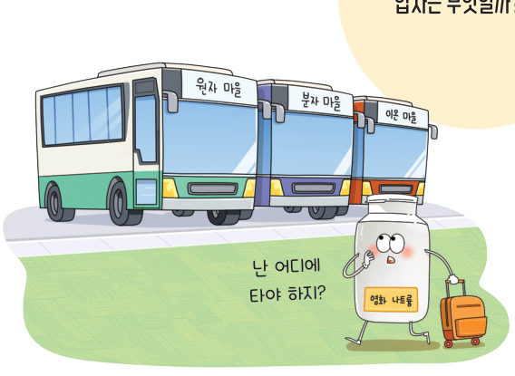
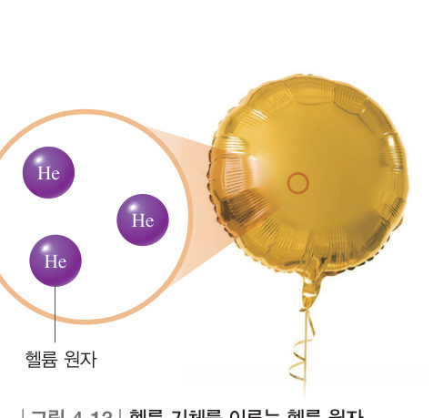
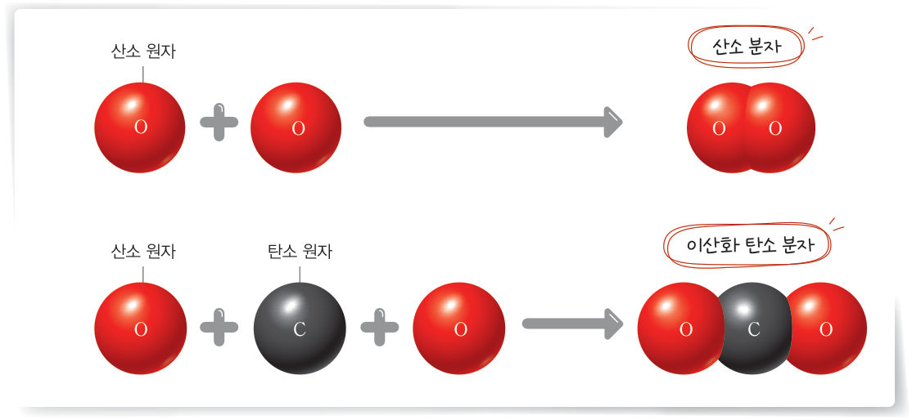
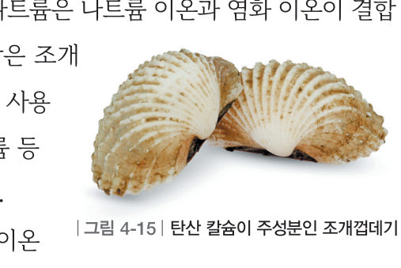

물질을 이루는
입자
“난 어디에 타야 하지?” 염화 나트륨을 이루는 입자는 무엇일까? 입자 돋보기로 헬륨, 산소, 오존, 이산화 탄소, 염화 나트륨 속 입자를 들여다보고, 원자·분자·이온 빙고 놀이를 해 보자.
“오늘은 너무 더운 날이야. 손으로 이마에 난 땀을 닦고 선풍기를 틀려고 하는데, 땀에는 염화 나트륨(NaCl)이 있어서 땀에 젖은 손으로 콘센트를 만지면 맨손으로 만질 때보다 감전의 위험이 더 높대.” 이 단원의 힌트 조각을 모으면 물질을 이루는 입자를 이해하고 이온은 전하를 띠고 있음을 알아내어 두 번째 블록 질문에 답할 수 있다.
이 단원과 관련해 이미 알고 있는 것에 표시해 보자.
우리 주변에 있는 물질을 이루는 기본 입자는 원자이다. 헬륨, 네온, 아르곤 등의 원자는 매우 안정적이라서 독립된 상태로 존재한다. 한편 원자들이 결합하여 독립적으로 존재하며 그 물질의 성질을 나타내는 입자를 분자라고 한다. 산소 분자는 산소 원자 두 개가 결합한 것이고, 이산화 탄소 분자는 산소 원자 두 개와 탄소 원자 한 개가 결합한 것이다. ●결합하는 원자의 종류와 수에 따라 분자의 종류는 달라진다.
원자는 전자를 잃거나 전자를 얻어 전하를 띨 수 있는데, 이처럼 전하를 띠는 입자를 이온이라고 한다. 소금의 주성분인 염화 나트륨은 나트륨 이온과 염화 이온이 결합하여 만들어진 물질이다. 조개껍데기의 주성분인 탄산 칼슘, 습기 제거제로 사용하는 염화 칼슘, 제빵소다의 탄산수소 나트륨 등은 모두 이온이 결합하여 만들어진 물질이다.



💡 오개념 바로잡기 염화 나트륨은 나트륨 이온과 염화 이온이 한 쌍씩 독립적으로 존재하지 않고, 규칙적으로 배열하여 서로를 둘러싼 형태로 존재하므로 분자가 아니다.
- 3×3 놀이판의 각 칸에 조건에 맞는 물질을 적는다. (독립된 원자로 이루어진 물질 2 종류 · 분자로 이루어진 물질 4 종류 · 이온으로 이루어진 물질 3 종류)
- 한 명씩 돌아가면서 물질을 하나씩 말하고, 해당 물질이 있으면 표시한다.
- 3 줄을 먼저 연결하면 빙고를 외친다.
| ③ 분자가 원자로 나누어지면 그 성질을 잃는다. | |
| ④ 결합하는 원자의 종류와 수에 따라 분자의 종류가 달라진다. | |
| ⑤ 같은 종류의 원자가 결합하면 원자의 수가 달라도 같은 성질을 가진다. |
| ⑦ 독립된 원자 | |
| ⑧ 분자 | |
| ⑨ 이온 |
1물질을 이루는 입자
⑵ 분자: 원자들이 결합하여 독립적으로 존재하며 물질의 을/를 나타내는 입자
⑶ 이온: 원자가 을/를 잃거나 얻어 전하를 띠는 입자 (염화 나트륨, 탄산 칼슘 등)
| 평가 기준 | 스스로 평가 |
|---|---|
| 지식·이해 물질을 이루는 입자가 원자, 분자, 이온으로 존재함을 설명할 수 있는가? | |
| 가치·태도 다양한 물질을 찾으며 과학적 호기심을 느꼈는가? |